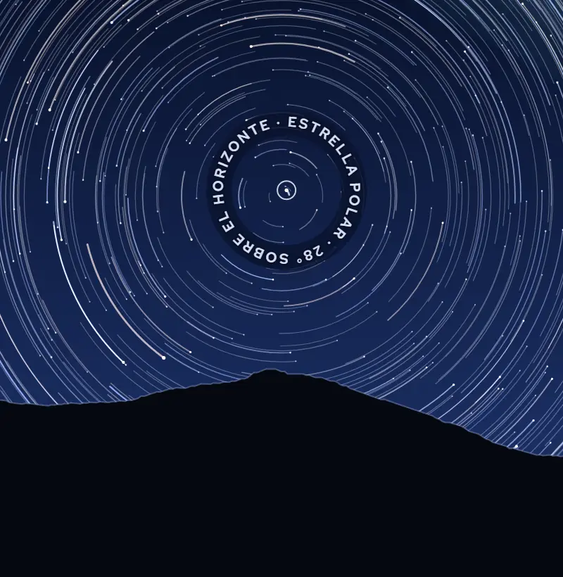
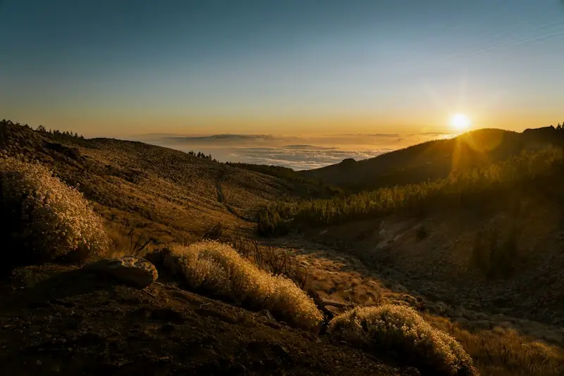
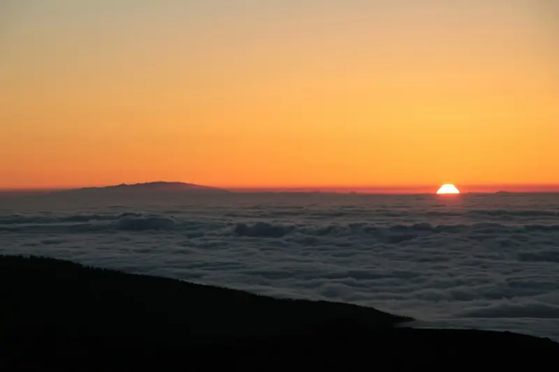
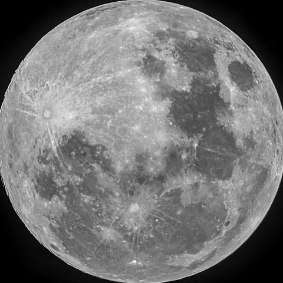

Cielo de UcancaExposición calculada mirando al norte, –:–––:–
Esta noche, el cielo gira sobre el Teide.
Puesta de sol –:– Noche cerrada –:– Luna –
Precios de ejemplo · grupos de 14 como máximo · no apta para menores de 8 años
De la playa a 2.000 metros.
Les recogemos unas dos horas antes de la puesta de sol en Costa Adeje, Playa de las Américas, Los Cristianos o Golf del Sur.
La hora exacta de su zona se la confirmamos por WhatsApp. Luego, algo más de una hora de carretera por el parque nacional hasta el Llano de Ucanca, una llanura dentro de la caldera de Las Cañadas.
- 3.700+ mCumbre del Teide · no subimos
- 2.000 mLlano de Ucanca · ≈ 13 °C menos que en la playa
- 1.000 m≈ 6,5 °C menos
- 0 mCosta · recogida
Cada 1.000 m de altitud, unos 6,5 °C menos. Es una regla de la atmósfera, no una previsión.

Por encima de las nubes.
Paramos a ver la puesta antes de bajar al llano.
Si esa tarde hay mar de nubes, lo verán desde arriba; si no, el océano y, con suerte, las otras islas. Después, el cielo se apaga por escalones. Estas son las horas de la noche que elijan:
- –:–Puesta de solEl borde superior del Sol toca el horizonte.
- –:–Fin del crepúsculo civilAparecen los planetas y las estrellas más brillantes.
- –:–Crepúsculo náuticoEl horizonte se pierde; ya se reconocen las constelaciones.
- –:–Noche cerradaEl Sol está 18° bajo el horizonte. A partir de aquí, solo la luna o las nubes iluminan el cielo.
Horas calculadas para el Llano de Ucanca con los algoritmos astronómicos habituales. El tiempo que haga no lo calcula nadie.

La luna decide cuántas estrellas.

–
Iluminada al –
Sale –:– · se pone –:–
–
Desde el Llano de Ucanca, la Estrella Polar queda justo encima del Teide: todo el cielo gira alrededor de ese punto, unos 15° por hora. Es lo que dibuja la exposición de arriba.
Montamos dos telescopios en el llano y les guiamos por el cielo de esa noche: la Luna cuando está, los planetas que estén sobre el horizonte, cúmulos y estrellas dobles. Les acompañan Nayra, Jonay o Elena.
Por qué aquí
- El Llano de Ucanca está a unos 2.000 m, dentro de la caldera de Las Cañadas.
- A unos 2.400 m, en Izaña, está el Observatorio del Teide.
- Desde 1988, una ley protege la calidad astronómica de los observatorios de Canarias.
- El Parque Nacional del Teide es Patrimonio Mundial de la UNESCO desde 2007.
Tres maneras de subir.
-
Atardecer y estrellas
Recogida hacia las –:–
69 €niños 8–12: 45 €
-
Amanecer sobre el mar de nubes
Próximo: –
59 €por persona
-
Luna llena
Próxima: –
59 €por persona
Precios de ejemplo. Si cancelamos por el tiempo o por cierre de la carretera, se devuelve todo.
Lleven abrigo. De verdad.
A 2.000 m hace unos 13 °C menos que en la playa, y de noche baja más. Si no traen abrigo, les prestamos una chaqueta.
Estimación para el llano al atardecer, solo por la altitud (6,5 °C menos cada 1.000 m). No es una previsión.
- Abrigo o plumífero. Les prestamos chaquetas si las necesitan.
- Gorro y guantes de noviembre a abril.
- Calzado cerrado: el llano es tierra y piedra volcánica.
- Agua. La altitud seca más de lo que parece.
- El móvil con el brillo al mínimo. En el llano usamos linternas de luz roja: no deslumbran la vista acostumbrada a la oscuridad.
Antes de reservar.
¿Y si está nublado?
Nadie puede prometer un cielo despejado, y nosotros tampoco. Lo miramos esa misma mañana; si hay que cancelar por el tiempo, se lo decimos por WhatsApp y les devolvemos todo.
¿Pueden venir niños?
Desde los 8 años; de 8 a 12 pagan 45 €. Menores de 8, no: volvemos tarde, hace frío y estamos a 2.000 m.
¿Cuánto dura?
Unas 6 horas puerta a puerta: les recogemos unas 2 h antes de la puesta de sol y vuelven unas 4 h después.
¿Se nota la altitud?
A 2.000 m la mayoría de la gente no nota nada. Si tienen problemas de corazón o respiratorios, o están embarazadas, consúltenlo antes con su médico.
¿Y si cierran la carretera del parque?
Solo salimos con la carretera abierta. Si la cierran, por nieve o por seguridad, cancelamos y les devolvemos todo.
¿Puedo hacer fotos de las estrellas?
Sí. Con un trípode y el modo noche, el móvil saca más de lo que parece; el guía les ayuda a encuadrar.
¿Hace falta saber de astronomía?
No. Se trata de mirar y preguntar.